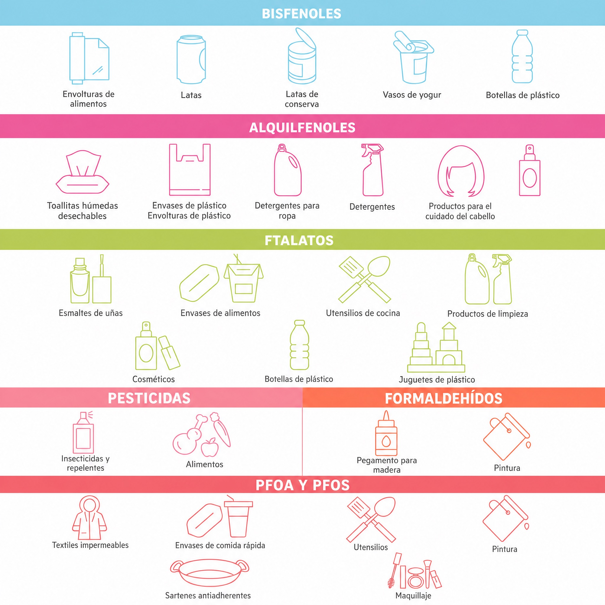

Los disruptores endocrinos son sustancias (o mezclas de sustancias) que interfieren con el correcto funcionamiento de nuestro sistema endocrino (que produce nuestras hormonas) y pueden tener efectos nocivos en nuestra salud. Los impactos de los disruptores endocrinos pueden incluso transmitirse a nuestros hijos, nietos y bisnietos...
Todos estamos expuestos a los disruptores endocrinos. Sin embargo, somos especialmente sensibles a sus efectos durante los períodos de cambios hormonales en nuestra vida. Estos se conocen como períodos vulnerables: durante los primeros 1.000 días de vida (desde el embarazo temprano hasta el tercer cumpleaños del bebé), durante toda la infancia y, en particular, durante la adolescencia.
🔬 Las sustancias que pueden alterar el sistema endocrino se encuentran en muchos artículos cotidianos: comidas preparadas industriales, productos de limpieza del hogar, utensilios de cocina, plásticos varios y a veces incluso en algunos cosméticos.
Comprometida con la seguridad y tolerancia de sus productos (ya desarrollados bajo estándares más estrictos que las regulaciones actuales), SVR toma acción:

(Fuente: Instituto Nacional del Cáncer de Francia)
Desde 2017, sometemos nuestros productos a pruebas sobre mecanismos endocrinos estrogénicos, androgénicos y tiroideos. Estas pruebas son realizadas por un laboratorio independiente especializado en disrupción endocrina.
Nuestro objetivo es probar los productos SVR diseñados para nuestros usuarios más vulnerables, y reformular los que no superen estas pruebas.
La ciencia aún está evolucionando en la comprensión de los disruptores endocrinos. Nos esforzamos por avanzar en estos temas con humildad. Pero seguimos adelante — porque queremos proporcionarte información clara y honesta, junto con los productos más seguros posibles para todos.
Estamos comprometidos a ampliar continuamente nuestro conocimiento sobre los disruptores endocrinos. Para ello, trabajamos estrechamente con un grupo de expertos especializados en este campo.
Nuestro comité está compuesto por endocrinólogos, toxicólogos y especialistas de agencias reguladoras. Juntos, discutimos nuestros desafíos y avances, y nos proporcionan recomendaciones sobre procedimientos a seguir, nuevas pruebas a explorar y direcciones de investigación a perseguir.
Gracias a estos expertos, identificamos constantemente nuevas oportunidades para proporcionarte respuestas claras y avanzar en la seguridad de los productos SVR, en los que confías.
Elige los que hayan sido testados para disruptores endocrinos, con un número reducido de ingredientes y sin fragancias artificiales.
Elige fibras naturales como algodón, lino, lana, seda o de segunda mano cuando sea posible.
Opta por opciones eco-friendly, usando jabón negro, vinagre blanco o bicarbonato de sodio.
Elige acero inoxidable, vidrio o utensilios de hierro fundido. No dejes tu botella de agua al sol; prefiere agua del grifo.
Elige opciones sin plástico hechas de materiales naturales, sin fragancia. Usa compresas lavables o salvaslips, y cámbialos regularmente.
Frutas y verduras: elige orgánicas y pélalas bien. Comidas precocinadas: transfiérelas a un envase no plástico antes de recalentar.